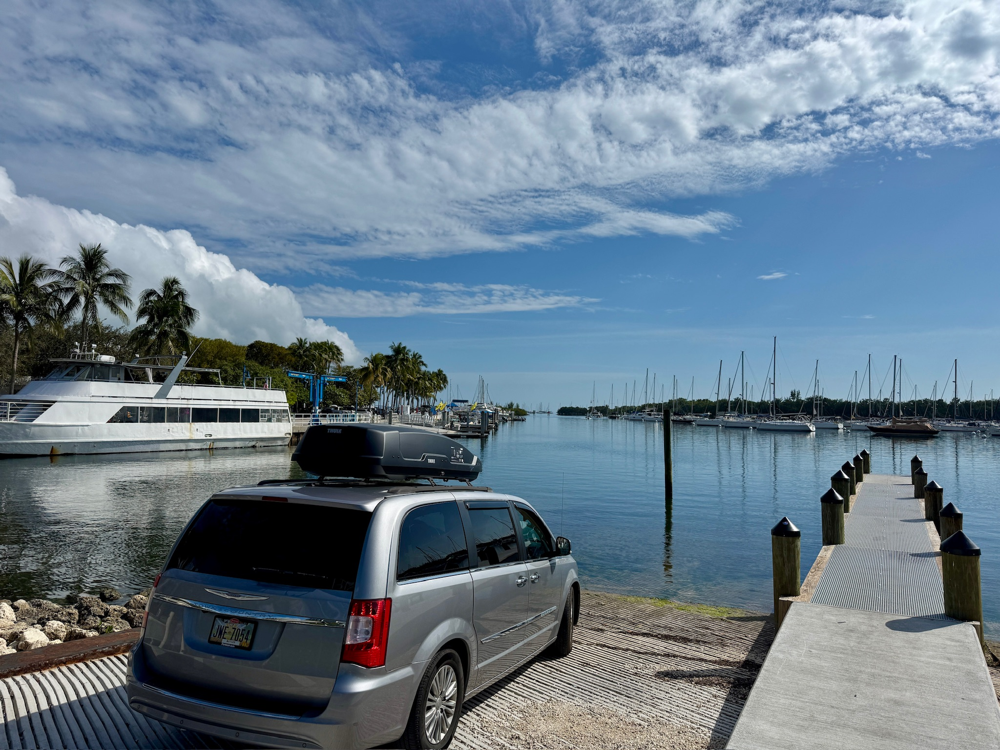
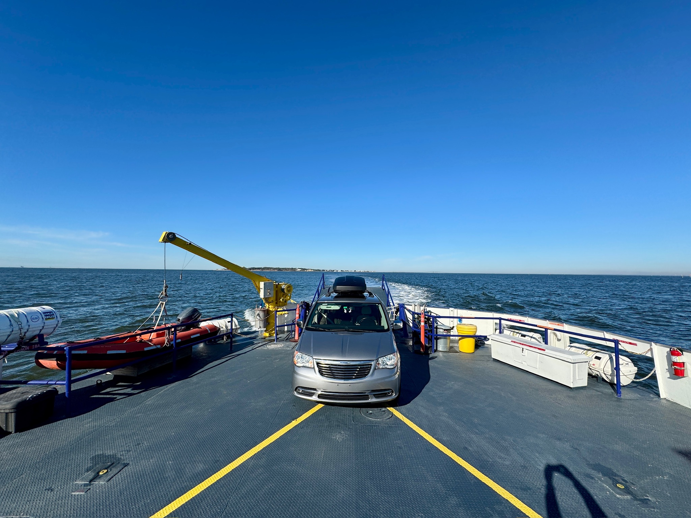
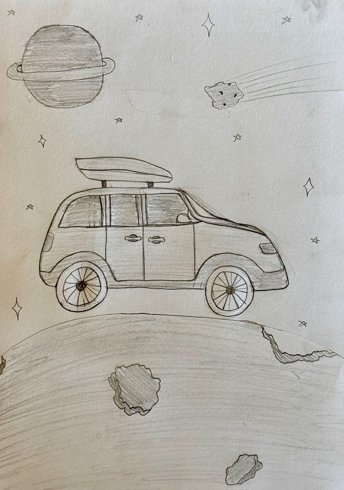
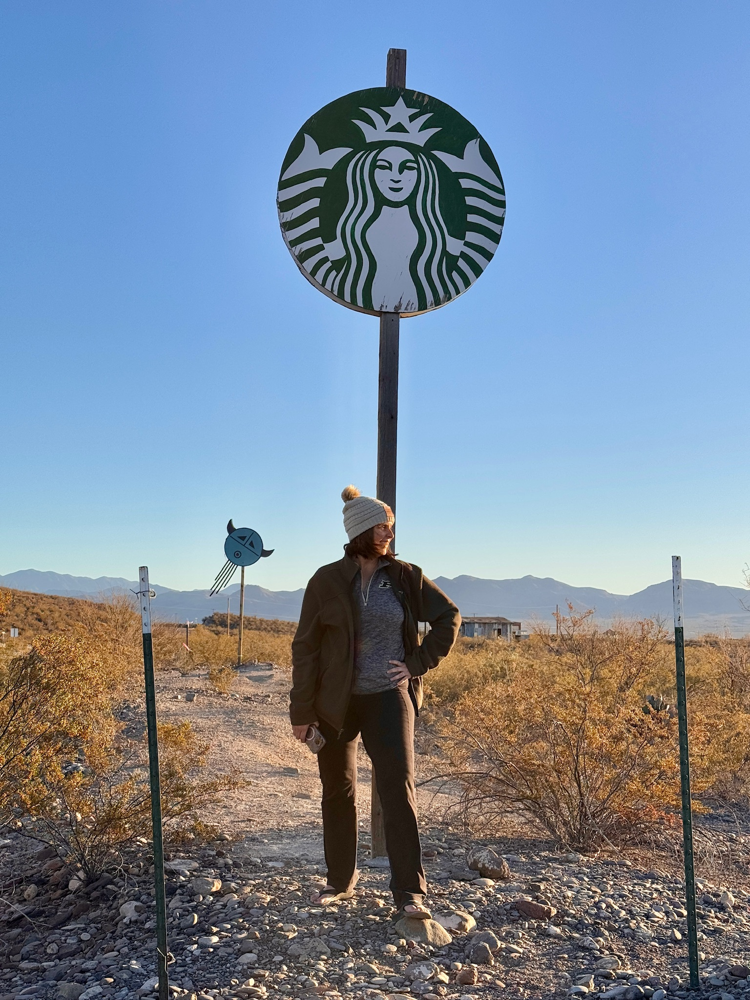

Let’s see the Redwoods on the way to Florida
That was how we described it jokingly to each other. Ivan was ready to go.
We returned first to the Memphis KOA—the scene of Mosquitogeddon—and succeeded! The travel kit had improved: a Jackery 1000, rechargeable Ryobi work fan, new soft-sided cooler, mattress topper, and more storage after removing the rear seats. At a service-free I-40 rest stop, the Jackery produced a hot roadside lunch. The system was already proving itself.
We looped north on I-25 to add Colorado, stayed near Taos, saw wild bighorn sheep, passed through Cimarron Canyon, visited the Very Large Array, and explored the Gila wilderness and ancient cliff dwellings. In Saguaro National Park we spotted a tarantula walking along the road.

Death Valley felt massive and astonishingly empty. We camped at Furnace Creek, explored Ubehebe Crater and Twenty Mule Team Canyon, and used the Jackery to make “Ranger Coffee,” a practice learned on safari. Death Valley is also a designated night sky area. These nights were maybe the first I had ever easily seen the Milky Way.
We could not reach Racetrack Playa without a suitable 4x4. David began posing the minivan beside “4x4 only” signs. The joke evolved into a list of capabilities for a future Alaska rig. North of the park, a route toward the Trail of 100 Giants sent us down our first-ever fire road.
These are maintained dirt roads deep in the woods. The sequoias were magnificent; the cold and altitude were exhausting. Two nights indoors in Fresno—including our anniversary—ended the first leg. Fresno: famously romantic.

We spent Thanksgiving flying
We spent Thanksgiving in Livermore with David’s cousin Melissa, and her husband, Rick. It’s awesome to score a hot, home-cooked meal on these trips. Fortunately, Rick is also a champion pilot so we got to experience glider and Cessna flights! Yosemite was cold and largely experienced from the minivan, with short walks and views of El Capitan, Half Dome, and waterfalls.
Snow made the high country uncertain. With coastal reservations as the next firm waypoint, we wandered through valley farmland and roadside Americana, spent time with our friends, Rebecca and Chris in Windsor, and reached Manchester Beach for our first Pacific view.
At Crescent City, three nights gave us time for a day trip to Coos Bay—connecting PCH-Ex to the earlier Northwest Hot-lap! We used the rest of our days with repeated drives through the redwood parks. Jedediah Smith remains a favorite. We later returned in PourHouse and hope to return again.

Down the coast. Every mile of CA-1
At Leggett, we began traveling south on California Highway 1. We traveled south until a slide closure forced us inland to Pinnacles National Park, where we saw endangered condors and experimented with night-sky photography. We later approached the break from the south before continuing toward Los Angeles.
In mid-December, storms were approaching Bolinas Lagoon. We rounded a bend and found Shoreline Highway under about four inches of water. Another minivan waited. Several 4x4s came through in the opposite direction, and the visible yellow centerline showed that the roadway did not suddenly plunge. We studied it, crossed roughly seventy-five feet at a rolling speed, and acquired a favorite line: “We drove through the ocean.”
Our first Golden Gate Bridge crossing was surreal—and painfully loud. In stormy weather, the bridge whistled all the way across. We stopped at overlooks, ate at the Taco Bell by the beach in Pacifica, placed Jeffrey’s ashes at James Dean’s crash site, and photographed Ivan’s “sexiest car-top carrier” on Rodeo Drive.
As we left LA, we were also beginning a coast-to-coast from LA to Miami. There’s a real sense of saying goodbye when we leave the ocean after a long drive like this. Soon, our views would be full of desert landscapes and plants.

Our first coast-to-coast, LA to Miami
Our final travel leg started in Palm Springs where we visited Joshua Tree, the Salton Sea, and the World’s Lowest Bar with Steve, a friend from work. Next, we headed to Las Vegas, where Spencer joined us! Together we traveled through St. George, Page, Lake Powell, slot canyons, rappelling, Coral Pink Sand Dunes, and the Grand Canyon’s South Rim before he departed from Phoenix. The parallels to the Mighty V Passage were undeniable. We were different, more experienced travels - still working on new experiences.
We continued through Hatch, White Sands, Carlsbad Caverns, Guadalupe Mountains, Marfa, saw a Border Patrol Tethered Aerostat Radar System, and Big Bend. The minivan posed in White Sands, joined an art installation in Marfa, passed the world’s largest pistachio, and carried us to the Rio Grande.
These sections are travel are simply amazing. When the whole thing comes together; the memories and experiences are unparalleled. And you get to do it all with your best friend. It’s just the best.
Texas to Florida went quickly. We camped at Dauphin Island, rode the ferry, watched the odometer cross 100,000 miles, and eventually parked at a Miami boat ramp. Pacific to Atlantic: complete.